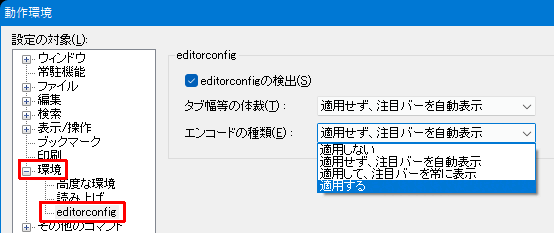
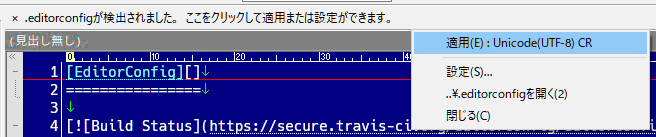
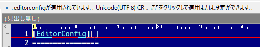

秀丸エディタ Ver.9.00以降では「EditorConfig」に対応しています。
「EditorConfig」とは、さまざまなエディター や IDE で、コーディングスタイルを統一するための仕組みです。「.editorconfig」という設定ファイルを参照し、各プロジェクト毎やファイル毎にコーディングスタイルを設定できます。
詳細は「EditorConfigのwebサイト」を参照してください。
秀丸エディタで対応しているのは、以下になります。
「EditorConfig」を有効にするには「動作環境 - 環境 - editorconfig」を開き、「editorconfigの検出」にチェックを入れます。

「タブ幅等の体裁」は以下の設定が対象です。
インデントの種類が変更になっても、既存の内容を変更することはありません。
例えば、タブでインデントしてあったファイルを開いても、スペースに置換するようなことしません。ファイル編集時の設定が変わるだけです。
「エンコードの種類」は以下の設定が対象です。
エンコードを変更する場合は「内容を維持して変換」を行います。
上記2つのグループに対し、条件に一致した場合の動作を設定します。
「適用しない」
.editorconfigの内容を無視します。
「適用せず、注目バーを自動表示」
注目バーをクリックすると、適応させる項目が表示されます。

適応すると、ファイルは「更新」状態になります。
「適用して、注目バーを常に表示」
注目バーを表示し、適応内容を表示します。

「適用する」
確認なしで適用します。
(3)と(4)の場合は、変更があってもファイルは「更新」状態になりません。
適用したインデントの設定が、元の「ファイルタイプ別の設定」と異なっても、「一時的な設定」にはなりません。
ファイル構成の例。
base
┣.editorconfig ()
┃ root = true
┃ [*.txt]
┃ end_of_line = crlf
┃
┣file1.txt
┃
┗folder1
┣file1-1.txt
┃
┗folder2
┃
┣.editorconfig (root = false)
┃ root = false
┃ [*]
┃ end_of_line = crlf
┃ [*.txt]
┃ end_of_line = lf
┃
┗file2-1.txt「editorconfigの検出」が有効な場合、開いたファイルのあるフォルダを起点として、上方向に「.editorconfig」を検索します。ドライブのルートフォルダにたどり着くか、「root = true」の記述がある「.editorconfig」が見つかるまで検索します。
複数の「.editorconfig」が見つかり、設定が重複している場合は対象のファイルに近い「.editorconfig」の内容が優先されます。
「.editorconfig」内に複数のマッチする条件があり、設定が重複している場合は、最後にマッチした内容が有効です。
「.editorconfig」の記述方法です。エンコードは「UTF-8」にしてください。 (「BOM」は基本的には不要。秀丸エディタは「BOM」があっても大丈夫ですが、他の環境で問題となる場合あり。)
形式的には、iniファイルに似ていて、以下の形式になります。
#コメント
;コメント
root = true
[適用するファイル1]
設定名 = 設定値
[適用するファイル2]
設定名 = 設定値「適用するファイル」の記述方法です。
ファイル名を直接指定。フォルダ名がない場合は、ファイル名のみにマッチします。
[README.TXT]
charset = utf-8フォルダを指定する場合は区切り文字として "/" を使うこと。
[Document/README.TXT]
charset = utf-8ファイル名には、コマンドプロンプトのワイルドカードに似ている記号を使うことが出来ます。
"/"を含まない任意の文字列
以下のように、"*"を指定した場合は全てのファイルという意味になる
[*]
charset = utf-8str1 または str2
#readme.md または readme.txt に対応させる場合
[{readme.md, readme.txt}]
#以下の書き方でもOK
#[readme.{md, txt}]
charset = utf-8他の記号と組み合わせる事も可能
#拡張子が md または txt に対応させる場合
[*.{md, txt}]
charset = utf-8"*" と "**"の違い。
フォルダの指定があるとわかりやすいです。
例1
[folder1/*.txt]
charset = utf-8folder1直下にある拡張子が「txt」のファイルにマッチします。サブフォルダにある拡張子が「txt」のファイルにはマッチしません。
◎: folder1\file1.txt
×: folder1\sub1\file1.txt例2
[folder2/**.txt]
charset = utf-8folder2および、folder2以下のフォルダにある 拡張子が「txt」のファイルにマッチします。
◎: folder2\file1.txt
◎: folder2\sub1\file1.txt「設定名」と「設定値」は以下になります。
ファイルの先頭に記述します。「.editorconfig」の検索を継続するかを設定。
設定値
インデントの文字数を数値で指定。
設定値
インデントの文字数を数値で指定。 indent_size が指定されていないときは、この値を使う。
設定値
インデントのスタイルの設定。インデントを空白で入力するか、タブコードを入力するか。
設定値
保存時、行末にある空白を除去。
設定値
最後の行が改行で終わっていない場合、保存時に改行を付けるかどうか。(Ver.9.20(現在β版)以降対応)
設定値
改行の種類
設定値
ファイルのエンコード
設定値
configstate キーワードを見ても設定が変更されたかどうかは判断できない。